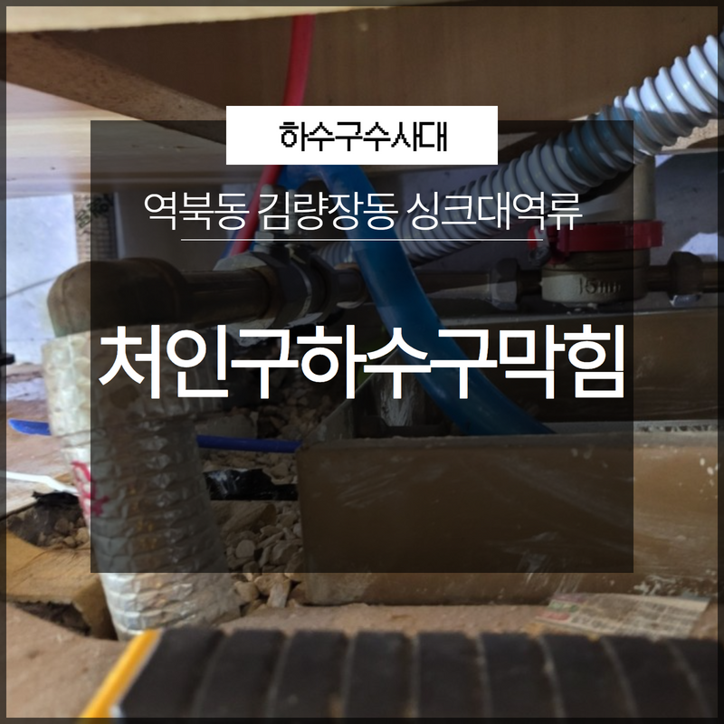
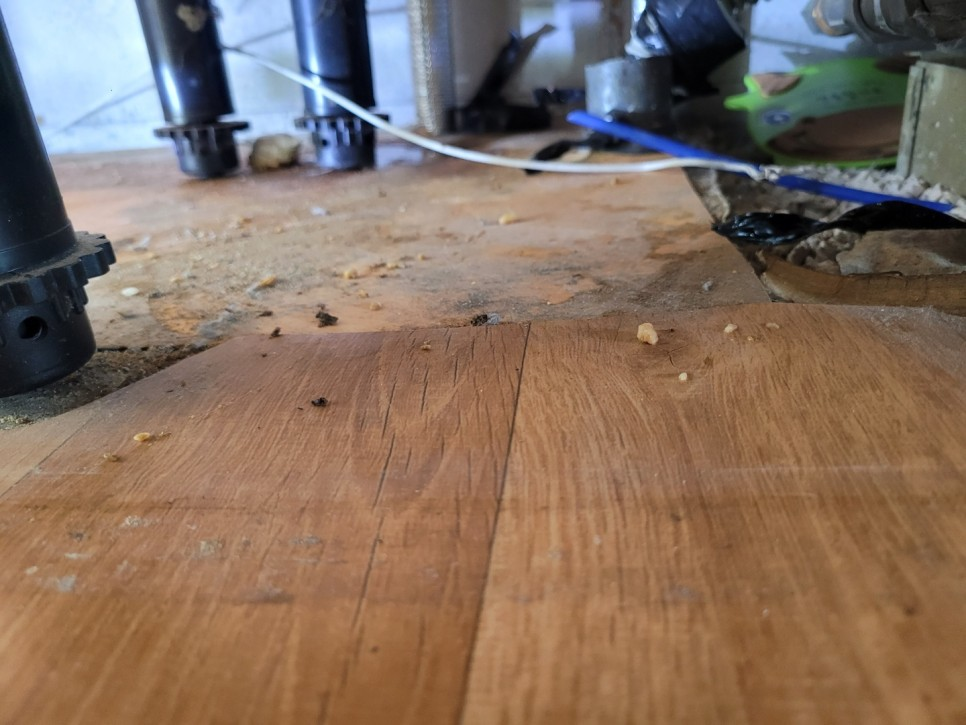
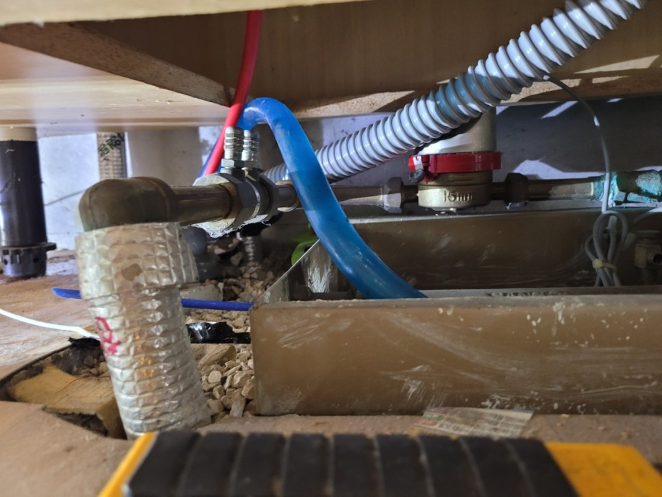
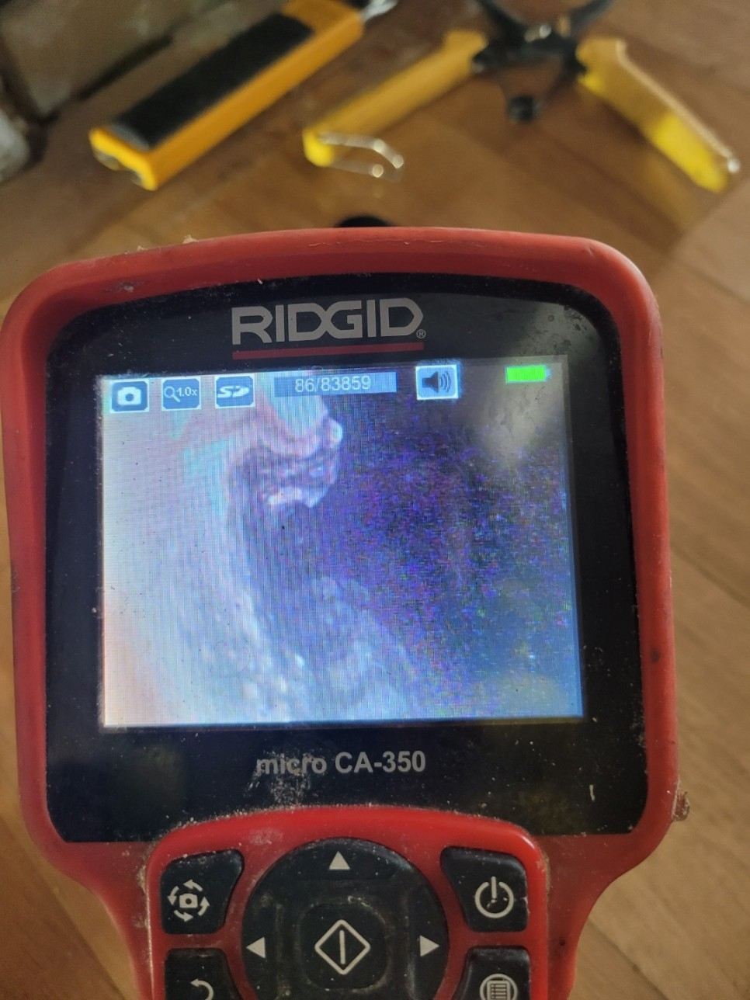
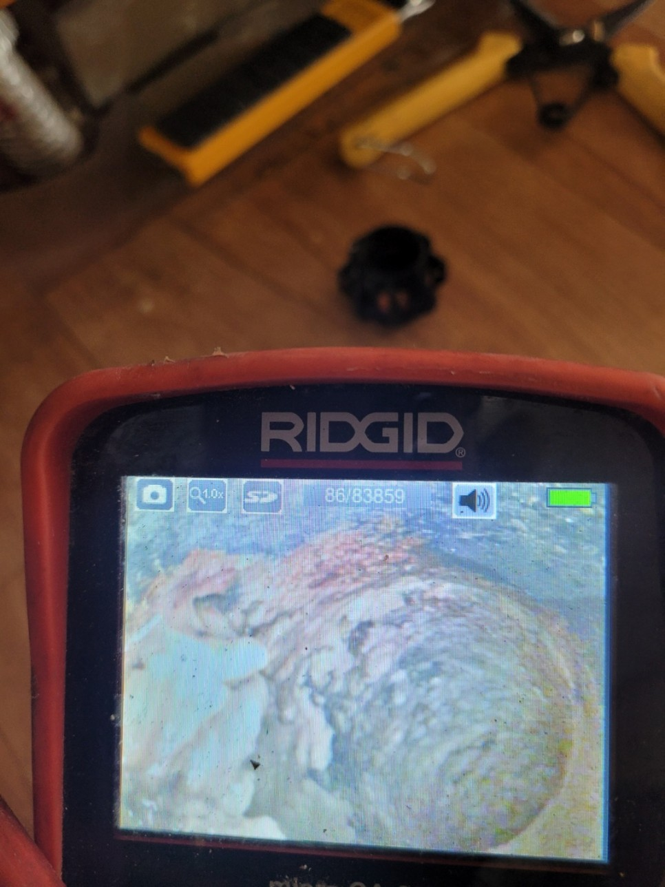
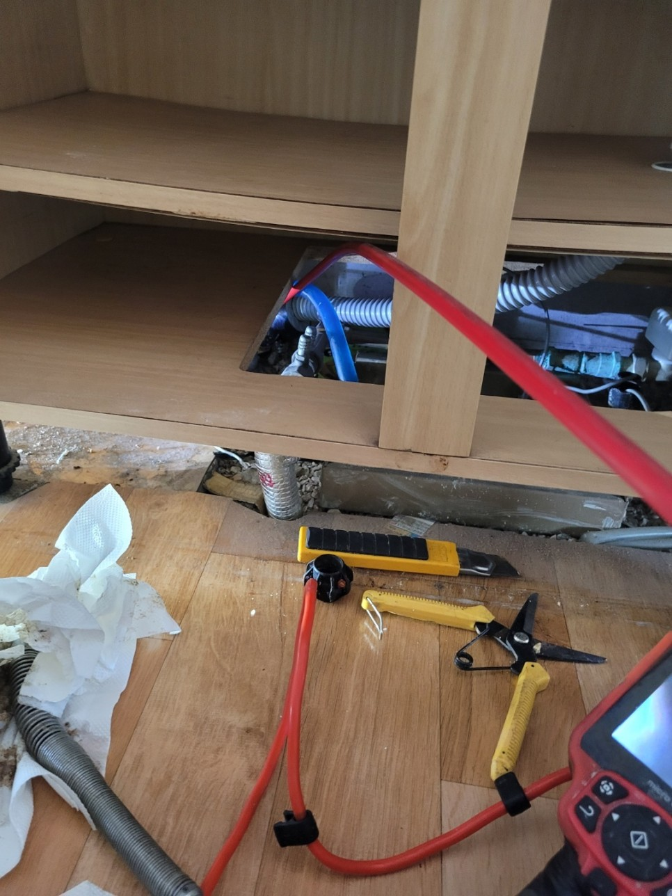
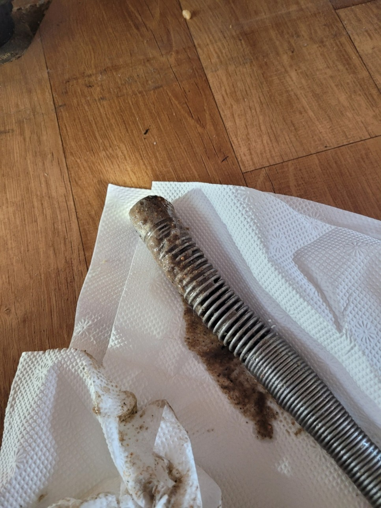

🏠 처인구하수구막힘 역북동 김량장동 싱크대역류 갑작스럽게 막혔나요?
용인 처인구 싱크대막힘 전문 시공 후기

📋 작업 개요
- 위치: 용인 처인구, 처인구, 용인
- 서비스 유형: 싱크대막힘, 하수구막힘, 배관막힘, 역류해결, 고압세척, 배관보수
- 작업 일시: 2022. 12. 28. 20:35
- 업체명: 하수구수사대 (010-5615-2118)
🔍 문제 상황
안녕하세요. 하수구수사대입니다.
눈에 보이지 않는 하수구는 우리 생활에 있어서 없어서는 안되는 중요한 설비라고 할 수 있습니다.
그런 만큼 평소에 관리를 하는 것이 중요하다고 할 수 있는데요 하지만 갑작스럽게 배관이 막히게 되면 우리는 항상 당황할 수밖에 없어서 어떻게 해결을 해야 하는지 고민이 되실 것입니다. 오늘은 처인구하수구막힘 역북동 김량장동 싱크대역류 현장을 통해서 하수구 막힘이 발생을 하게 되면 어떻게 해야 하는지에 대해서 알려드리는 시간을 가져보도록 하겠습니다.
처인구하수구막힘 역북동 김량장동 싱크대역류 현장은

🔎 원인 분석
💡 전문가 진단: 눈에 보이지 않는 하수구는 우리 생활에 있어서 없어서는 안되는 중요한 설비라고 할 수 있습니다.
한창 영업을 하고 있는 식당이었는데요 싱크대에서 역류가 발생을 하게 되면서 급하게 의뢰를 해주신 곳이었습니다. 아시다시피 식당 같은 경우에는 하루에 많은 양의 음식물을 다루는 곳인 만큼 배관 관리에 더욱 신경을 써야 하는 곳인데요 하지만 모든 일이 그러하듯이 급한 상황이 닥치기 전까지는 사소한 부분이나 주위까지 둘러보기가 쉽지 않다고 할 수 있습니다.
평소에 조금만 관심을 가지고 정기점검을 하게 된다면 갑작스러운 배관막힘의 상황은 미리 예방을 할 수 있게 되는 것입니다. 식당처럼 많은 양의 음식물을 조리를 하고많은 양의 식기를 세척해야 하는 곳 같은 경우는 다른 곳보다도 하수구가 막히기 쉬운 환경이라고 할 수 있는데요 그런 만큼 평상시에 잘 관리를 못하게 되는 경우에는 싱크대막힘으로 인해서 영업을 하는데 있어서도 지장이 발생할 수 있게 되는 것입니다.
그러므로 이러한 일이 발생하지 않도록 하기 위해서는
평소에 관리를 좀 더 잘 해주시는 것이 필요하다고 할 수 있습니다. 현장에 방문을 했을 때는 건물 내에 있는 싱크대가 역류했을 뿐만 아니라 다른 배관에서도 물이 잘 내려가지 않는 상황이었습니다. 현장의 싱크대에서는 물이 넘쳐흘러서 빠져나가지 못하고 역류를 하고 있는 상황에 다른 곳에 있는 하수구 배관에서도 정상정인 배수가 되지 못하고 있는 상황이었습니다.

🔧 작업 과정
이러한 상황은 식당을 정상적으로 영업하는 것이 힘들기 때문에 빠른 해결이 필요하다고 할 수 있는데요 평소보다 물이 잘 내려가지 않는 상황이거나 하수관에 이상이 생긴 것 같은 경우에는 빠르게 전문 업체와 연락을 해서 확인을 하는 것이 필요하다고 할 수 있습니다.
싱크대 배관이 막히는 대에는
대부분 음식물 찌꺼기나 기름때가 원인이 되는 경우가 많이 있는데요 싱크대 막힘의 원인을 찾기 위해서 배관 내시경을 이용해서 내부를 먼저 확인하는 작업을 하였습니다. 처인구하수구막힘 역북동 김량장동 싱크대역류 하수구의 상태를 확인을 해보니 심한 악취가 올라올 뿐만 아니라 각종 기름과 음식물 찌꺼기 덩어리 들로 인해서 많이 지저분해진 상황이었습니다.
오래 방치가 되어 온 만큼 굳어 있는 기름 덩어리와 음식물 찌꺼기들을 제거하는 것이 필요했는데요 이때는 전문 장비를 이용해서 깨끗하게 제거를 하는 것이 필요하다고 할 수 있습니다. 그래서 정기적으로 전문 업체를 통해서 하수구 세척을 한 번씩 해주는 것도 큰 도움이 될 수 있는데요
식당 같은 경우는 1년에 한두 번씩 세척하는 것은 추천드립니다. 이물질 덩어리를 제거하기 위해서는 전문 장비의 도움을 받아야 하는데요 이물질을 부수고 흡입을 하는 과정을 통해서 막힘의 원인이 되는 이물질들을 모두 제거를 하였습니다.
이렇게 전문 장비를 통해서 배관막힘을 해결을 하게 되면 관리와 보수를


✅ 작업 완료
한 번에 할 수 있기 때문에 훨씬 더 효율적이라고 할 수 있습니다.
경기도 용인시 처인구 중부대로1313번길 20-25 2층 202호 나21




⚠️ 주방 싱크대 배관 막힘 예방 수칙
- ✅ 기름기가 묻은 식기나 프라이팬은 설거지 전 키친타올로 반드시 기름때를 닦아내세요.
- ✅ 주기적으로 싱크대 개수대에 뜨거운 물을 가득 받아 한 번에 내려 배관 내부 기름을 씻어내세요.
- ✅ 배수구 거름망을 미세한 필터로 사용하시고 음식물 찌꺼기가 틈으로 새어 들지 않게 관리하세요.
- ✅ 베이킹소다와 식초를 뜨거운 물과 함께 일주일에 한 번씩 부어주면 배관 살균과 막힘 예방에 좋습니다.
💡 핵심 정리
- 확실한 장비 작업(내시경 점검 및 샤프트 스케일링)으로 원인을 뿌리 뽑습니다.
- 작업 후 1년 이내에 동일한 부위 재발 시 100% 무상 A/S 서비스를 보장합니다.
- 서울 · 경기 · 인천 전 지역에 24시간 언제든 긴급 출동할 수 있도록 항시 대기 중입니다.
❓ 자주 묻는 질문 (FAQ)
🚨 용인 처인구 싱크대막힘 문제로 고민이신가요?
정확한 원인 진단과 확실한 시공으로 재발 없는 해결을 약속드립니다.
24시간 긴급 출동 | 서울 · 경기 · 인천 전지역 | 1년 내 재발 시 무상 A/S